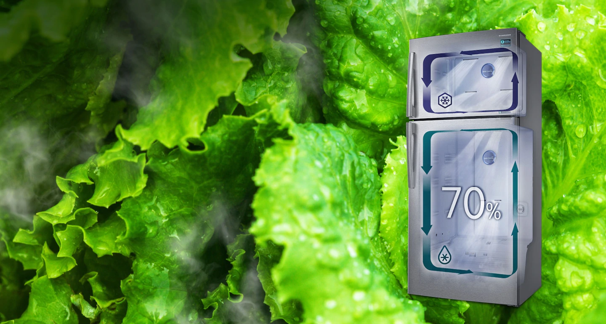
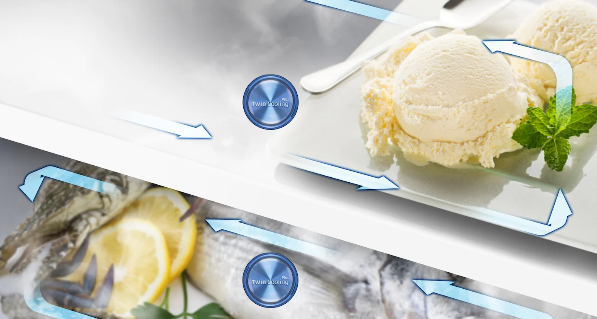
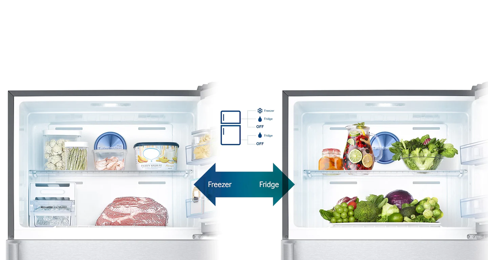
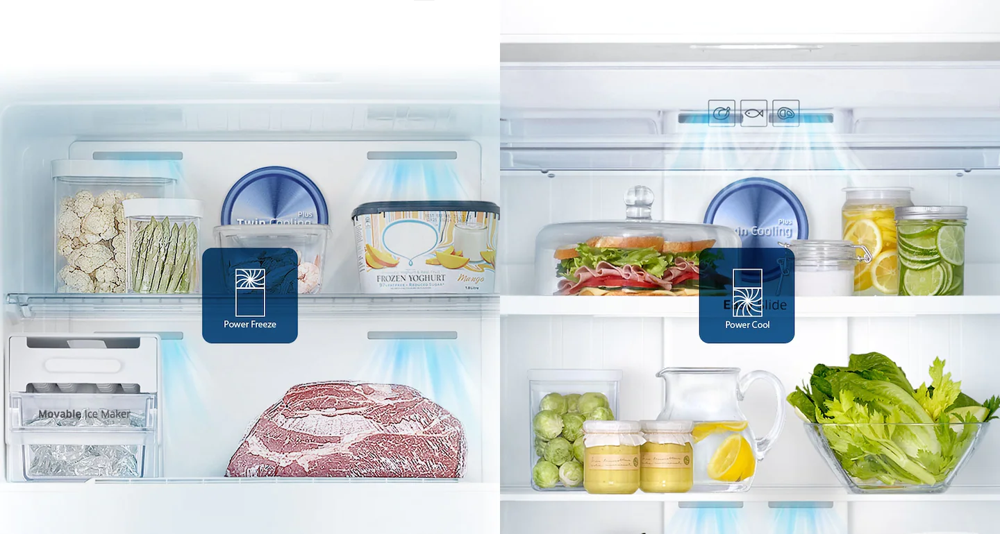
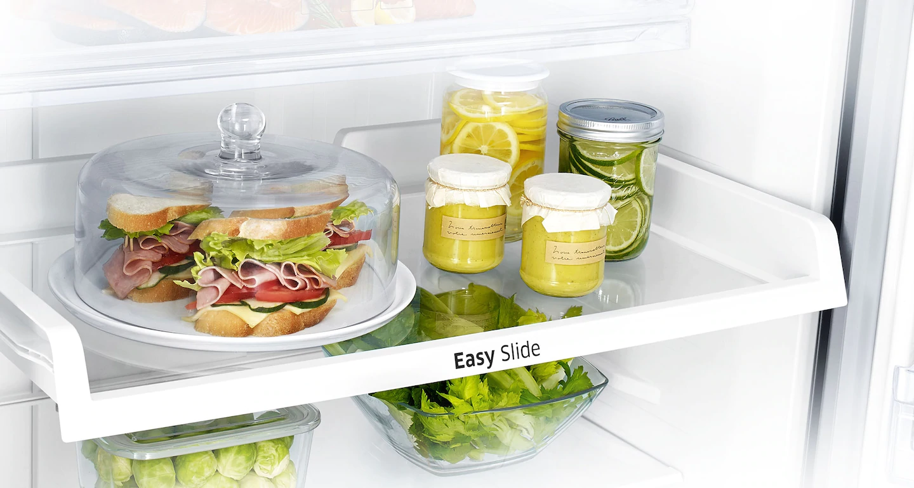
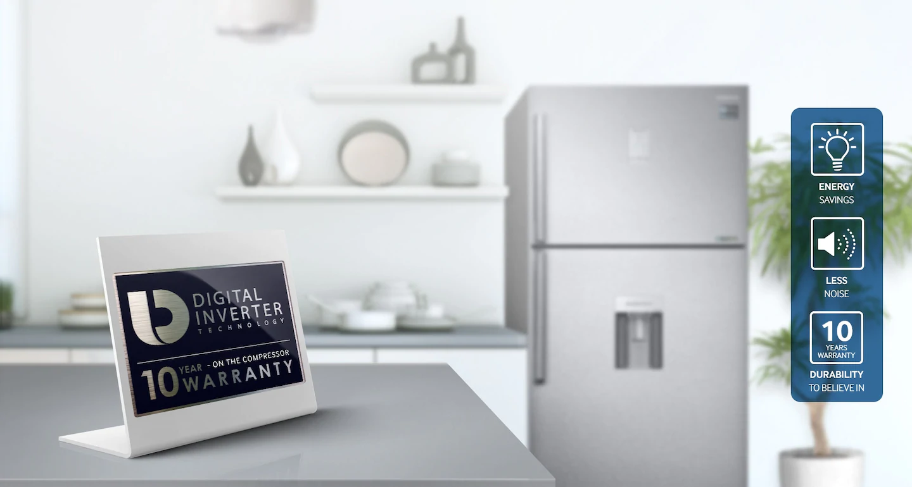
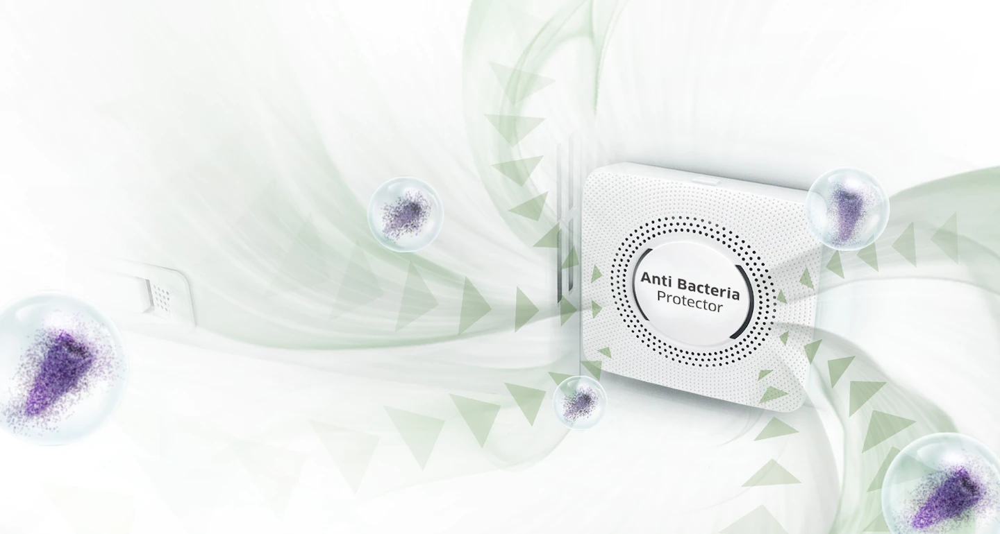
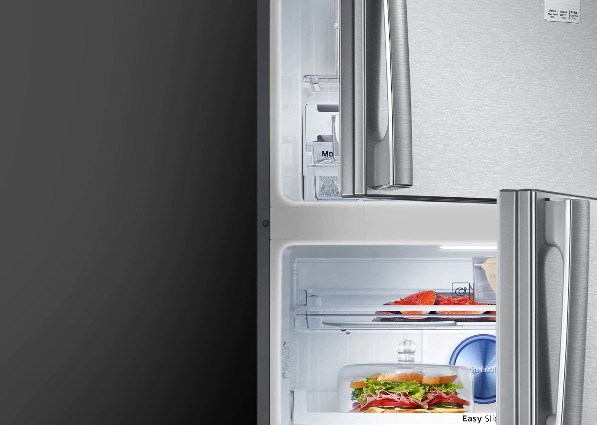

Сочность и свежесть продуктов во всех камерах
холодильника
Только система Twin Cooling Plus™ создает в холодильнике благоприятную среду для хранения свежих продуктов
при 70% уровне влажности, в отличие от традиционных TMF, которые обеспечивают лишь 30% уровень влажности.
Таким образом, данная технология позволяет дольше сохранять свежесть продуктов, не вызывая их высыхание.

Изумительно вкусные замороженные продукты без
посторонних запахов
Система Twin Cooling Plus™ охлаждает камеры холодильника отдельно друг от друга, предотвращая таким образом
распространение нежелательных запахов из холодильной камеры в морозильную. Благодаря этому замороженные
продукты лучше сохраняют свой естественный запах.

5 режимов конвертации, доступных в любой
нужный вам момент
Непревзойденная гибкость хранения продуктов. Легко превращайте вашу морозильную камеру в холодильную,
обеспечивая свежесть любых продуктов, которые нужно хранить в разные времена года или которые вы хотите
приберечь для особых случаев. Или перейдите в режим «выключено»* для экономии электроэнергии, зависит от
спецификации.

Можно сделать лед и охладить напитки
Стремительно подает холодный воздух, обеспечивая быстрое замораживание или охлаждение продуктов.
Достаточно всего одного прикосновения к нужной кнопке, и функция Power Cool начнет быстро охлаждать еду и
напитки. А функция Power Freeze идеально подойдет для замораживания или обеспечения твердой консистенции
замороженных продуктов, а также для того, чтобы сделать лед.

Вы можете легко найти и достать продукты, даже
у задней стенки холодильника.
Достать еду из холодильника — это всегда означает справиться с рядом преград.
Полка Easy Slide позволяет хранить продукты, эффективно используя пространство, благодаря чему
доступ к ним становится проще простого — будь они у задней стенки холодильника или в его углах.

Работает дольше, тише и использует меньше
электроэнергии
Технология цифрового инвертора автоматически регулирует скорость компрессора на всех 7 уровнях охлаждения.
Благодаря применению данной технологии компрессор потребляет меньше энергии, отличается меньшим
уровнем шума во время работы и подвержен меньшему износу — все это позволяет продлить срок его
эксплуатации.

Сохраняет гигиеническую чистоту и свежесть
воздуха
Решение Anti-Bacterial Protector обеспечивает чистоту и гигиеничность холодильной камеры. Воздух проходит через
фильтр с активированным углем, благодаря чему происходит его непрерывная стерилизация и устранение
неприятных запахов, в то время как антибактериальная сетка уничтожает микробы.

Прекрасная освещенность внутреннего
пространства
Высокопроизводительные светодиодные лампы смотрятся намного изысканнее стандартного освещения, а кроме
того, обеспечивают значительную экономию электроэнергии. Расположенные в верхней части холодильника и в его
стенках, они создают внутри него приятный и яркий свет и прекрасно освещают каждый уголок.
